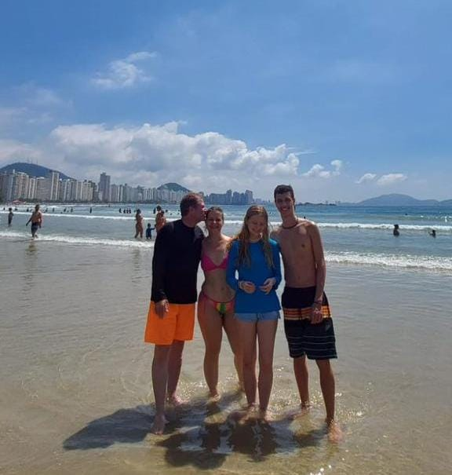

Introdução
Sou uma profissional da área da saúde, atuo como pediatra, tendo cursado medicina na Universidade Universidade Estadual Paulista (Unesp)
Trajetória acadêmica e profissional
Sempre estudei no Sesi, ao me formar estudei por 1 ano na escola ADV. Quando passei no vestibular comecei os preparativos para a faculdade e ingressei muito orgulhosa de mim mesma. Ao final da universidade, decidi me especializar em Pediatria, pois desde sempre tive uma admiração especial por crianças. Hoje procuro um hospital/clinica para trabalhar e crescer pessoalmente e profissionalmente!
Paixões e Interesses
Sou amante de crianças,história e animais. Pretendo fazer uma segunda faculdade na área de ciencias humanas, pois desde pequena fui apaixonada pelas trajetórias e curiosidades dos lugares.
Vida Pessoal
Mulher, médica, esposa e mãe de 3 filhos, 2 meninas e 1 menino.
Projetos
Possuo um livro publicado: "Trilhando a maternidade", que aborda sobre assuntos delicados, como a sindrome do ninho vazio, depressão pós-parto e oferece suporte e conselhos para ma~es esgotadas e desamparadas. wikipedia.org/wiki/ text-align: center;
Fotos:
{kind=link}
.jpeg)
.jpeg)